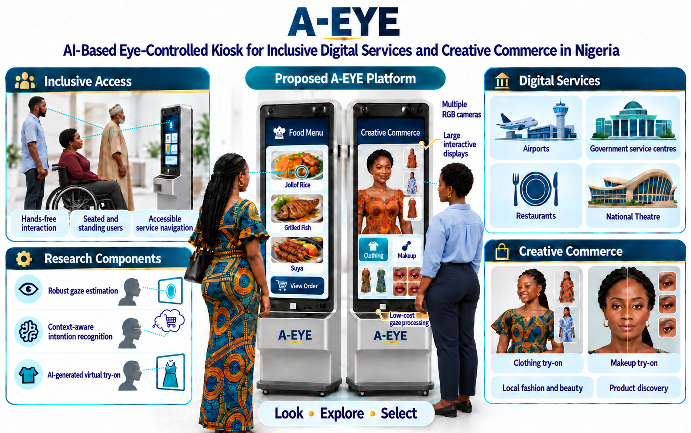

01
Eye-tracking demonstration
MP4Playback is unavailable in this browser. Use the download link to watch the original recording.
Exploring how gaze can become an input for large-screen interaction. Watch the research demonstrations behind A-EYE.
Watch the demonstrationsTwo original recordings.
Play, pause or view in full screen.
Playback is unavailable in this browser. Use the download link to watch the original recording.
Playback is unavailable in this browser. Use the download link to watch the original recording.
These recordings document preliminary eye-tracking work. The integrated kiosk and virtual try-on applications below are the proposed research direction.
A-EYE proposes an AI-based eye-controlled kiosk for inclusive digital services and creative commerce in Nigeria.
The research will build on the preliminary studies to investigate robust gaze estimation, intention recognition and virtual clothing and makeup try-on.
